Double Commander将其配置设置保存在文件中。您可以从配置 设置部分配置这些配置文件的位置。通常不需要手动编辑这些文件，因为在少数情况下，Double Commander的参数可以通过程序的界面获得。
主要文件是：
doublecmd.xml – 所有主要程序设置；
doublecmd.cfg – 在所有程序组件初始化和加载 doublecmd.xml 之前应用的设置;
extassoc.xml – 文件扩展名关联配置;
favoritetabs.xml – 收藏的标签;
pixmaps.txt – 将文件扩展名映射到 MIME 类型图标名称；
multiarc.ini – 外部压缩文件器；
shortcuts.scf – 快捷键设置;
colors.json – 所有颜色设置，Double Commander 将颜色值存储在“浅色”和“深色”配置文件中，并根据当前主题（浅色或深色主题）自动选择配置文件；
tabs.xml – 打开的标签页列表;
history.xml – 命令行和目录历史，搜索和替换等。
其他几个…… - 等等……
文件是自动生成的，除了 multiarc.ini 和 pixmaps.txt ：它们包含在 Double Commander 的分发中（在“默认”文件夹中），并在程序首次启动时复制到配置文件目录。
doublecmd.xml 中的配置版本定义了数据存储格式：如果在程序的新版本中发生了变化（例如，添加了新参数或现有参数发生了变化），那么在第一次启动时，Double Commander 将更新配置文件。升级过程将备份 doublecmd.xml 的先前版本。
“选项”窗口允许设置几乎所有的 Double Commander 选项，但有一些参数 只能在 doublecmd.xml 配置文件中手动更改。窗口底部提供了按参数名称过滤的功能：程序将仅显示包含匹配参数的部分。
要在程序帮助中打开相应的部分，您可以使用 帮助 按钮或 F1 键。
Double Commander 有几个 内部命令 用于打开配置对话框并快速跳转到所需部分。
Double Commander支持导入/导出一些设置：常用文件夹列表、收藏标签、外部压缩程序、工具栏（主工具栏和中间工具栏）、工具提示。此外，快捷键列表可以保存到新文件中，您可以在它们之间切换。
注意：在文件或目录选择按钮的右侧是按钮选择适当路径的一些功能 ：弹出菜单包含变量列表（包括环境变量）和一些附加功能，详见描述这里。
这些是可用于Double Commander的各种翻译。您可以选择您喜欢的语言。
有几个参数会影响Double Commander的某些行为。
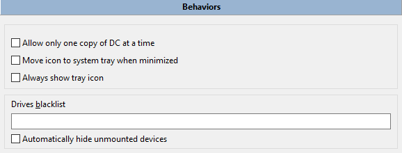
一次只允许运行一个 DC 副本 – 如果启用，则只能运行一个程序副本。如果您尝试运行第二个 Double Commander 副本，第一个副本将被激活。
最小化时将图标移动到系统托盘 – 当最小化时，Double Commander将在系统托盘（通知区域）中显示其图标，而不是在面板（或 Windows 任务栏）中。
始终显示托盘图标 – 如果启用，除了面板上的Double Commander窗口按钮（或 Windows 任务栏）外，还会额外显示托盘图标。
驱动器黑名单 – 使用此功能在驱动器面板菜单栏中隐藏某些驱动器。每个项目必须包含驱动器/挂载点的完整路径。多个驱动器用分号 ";"
分隔，不要有空格。示例：/media/cdrom;/mnt/win_c（Linux）或 a:\;b:\;d:\（Windows）。在 Unix/Linux
中，您还可以使用通配符掩码，例如 AppImage 文件的示例：/tmp/.mount_*。隐藏的驱动器仍然可以访问，例如，您可以从常用文件夹列表菜单中打开它们或手动更改路径。
自动隐藏未挂载的设备 – 未挂载的设备将自动从驱动按钮栏 和驱动列表中移除。
本节包含内置Double Commander工具（编辑器（ F4 ）、查看器（ F3 ）和文件比较工具）的设置以及启动终端的命令。
您可以指定外部程序用于编辑、查看和查找差异。这些外部程序将替代内部工具。
本节中有两组参数：
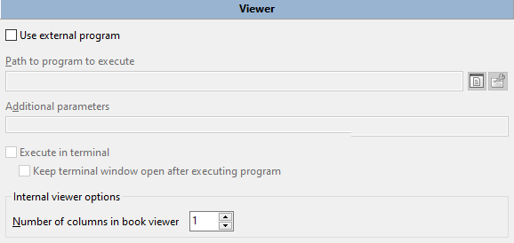
第一组允许您指定一个外部程序来查看文件。每次调用查看器时，Double Commander将自动将完整文件名作为最后一个启动参数添加。
此外：在终端中执行 和 执行程序后保持终端窗口打开 如果您正在使用控制台程序和/或程序的终端输出很重要（或者只是暂时用于调试），可能会很有用。
下一组参数是内部查看器选项，然而几乎所有参数和开关都可以在内置查看器 的窗口中找到。
书籍查看器中的列数 – 请参阅此模式的描述 在这里 。
还有一些参数 只能在 doublecmd.xml 配置文件中手动更改。
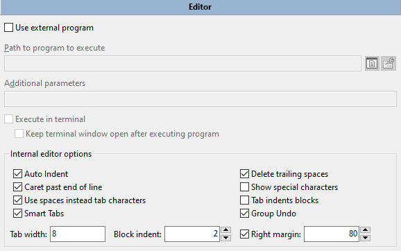
第一组参数允许您指定一个外部程序来编辑文本文件。每次调用编辑器时，Double Commander将自动将完整文件名作为最后一个启动参数添加。
此外：在终端中执行 和 执行程序后保持终端窗口打开 如果您正在使用控制台程序和/或程序的终端输出很重要（或者只是暂时用于调试），可能会很有用。
内部编辑器选项：
自动缩进 – 允许在使用 Enter 创建新行时，使用与前一行相同数量的前导空格来缩进光标。
删除尾随空格 – 自动删除尾随空格，仅适用于已编辑的行。
光标超出行末 – 允许光标进入行末位置之后的空白区域。
显示特殊字符 – 显示空格和制表符的特殊字符。
使用空格代替制表符 – 将制表符转换为指定数量的空格字符（在输入时）。
标签缩进块 – 如果启用， Tab 和 Shift+Tab 在选择文本时作为块缩进和取消缩进。
智能标签 – 当使用 Tab 键时，光标将移动到上一行的下一个非空字符。
组撤销 – 如果启用，所有相同类型的连续更改将通过一次撤销或重做命令进行处理，而不是逐个撤销/重做每个文本更改。
制表符宽度 – 制表符字符的宽度（以字符数计算）。如果 使用空格代替制表符 被启用，则 Tab 键将插入指定数量的空格字符。如果 智能制表符 选项被启用，则此设置不适用。
块缩进 – 设置使用相应命令时缩进增加或减少的字符数。
右边距 – 行长度标记，在给定位置的细垂直线：行不会因强制换行而被截断，这只是一个视觉提示。在建议限制字符串长度的情况下（例如，80 或 120 个字符）非常有用。
SynEdit 组件用于内置编辑器，SynEdit 的一些语法高亮规则设置在本节中可用。
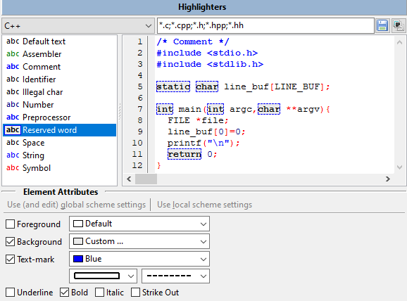
在窗口顶部有一个下拉菜单，包含文件类型（纯文本、编程语言和标记语言）以及一个文件扩展名列表的字段。按钮：
保存 – 将保存文件扩展名列表中的更改。
重置 – 将列表重置为默认值。
在窗口的左侧有一个可用元素的列表，适用于所选文件类型，右侧是预览区域。
您可以更改用于关键字、字符串、数字、运算符等的文本和背景颜色以及字体样式（下划线、粗体、斜体和删除线）。对于默认文本，仅提供文本和背景颜色的选项。
文本标记用于在元素周围添加边框：您可以选择颜色、边框类型和线条类型。
使用（和编辑）全局方案设置 和 使用本地方案设置 仅适用于默认文本：您可以一次更改所有文件类型的颜色，或仅更改某些文件类型的颜色。
所有设置都保存在 colors.json 文件中。
注意：可能的方式来更改（修复或改进）文件的解析（句法分析）、关键字列表等：
此外，Double Commander 还使用 SynUniHighlighter 组件进行语法高亮，详情请参见 常见问题 。
几乎所有的参数和开关都可以在内置差异窗口中找到，这一部分只有两组参数。
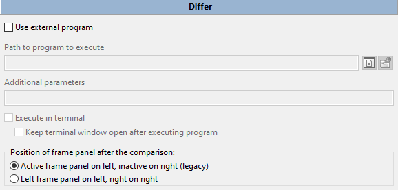
第一组允许您指定一个外部文件比较程序。每次调用差异工具时，Double Commander将自动将完整文件名作为最后的启动参数添加。
此外：在终端中执行 和 执行程序后保持终端窗口打开 如果您正在使用控制台程序和/或程序的终端输出很重要（或者只是暂时用于调试），可能会很有用。
比较后框架面板的位置 – 定义文件名传递给比较程序（内置或外部）的顺序：
左侧为活动文件面板，右侧为非活动文件面板 – 活动文件面板中的文件将在比较程序的左侧面板中打开，第二个文件将在右侧面板中打开。
左侧框架面板在左，右侧在右 – 左侧文件面板中的文件将在比较程序的左侧面板中打开，第二个文件将在右侧面板中打开。
如果在活动面板中选择了两个文件，第一个文件将会在比较程序的左侧面板中打开。
本节包含终端启动参数：
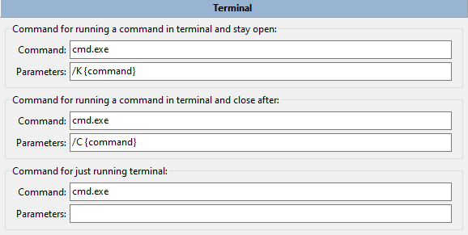
前两个项目用于在终端中运行命令：要指示在命令行上运行的命令的位置，请在参数字段中使用 {command}。
默认值：
Windows: cmd.exe
macOS：Double Commander将自动检测系统设置中指定的程序。
Linux 和其他类 Unix 系统：
对于 Debian 及基于 Debian 的发行版（如 antiX、Devuan、Ubuntu、Linux Mint 等），将使用 x-terminal-emulator ：这是这些系统默认使用的终端的符号链接。
否则，Double Commander 将尝试从桌面环境的设置中获取值：Cinnamon、GNOME、KDE、LXDE、LXQt、MATE 或 Xfce。
如果自动检测失败，Double Commander将使用 xterm 。
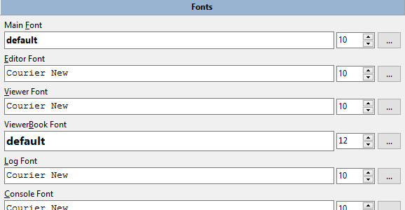
您可以为编辑器 ( F4 )、查看器 ( F3 )、文件面板 (主字体) 和 Double Commander 界面的其他元素选择字体，以及它们的大小。每个底部行允许您查看所选字体的显示效果。一个重要的说明：编辑器和查看器的字体必须是 等宽字体。下图展示了上方窗口中的比例间距字体（注意奇怪的间距）和下方窗口中的等宽字体，其间距显示正确。此外，某些比例字体的字符可能会相互覆盖，看起来相当奇怪。
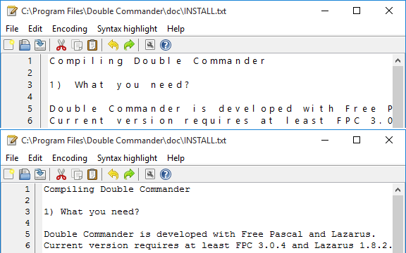
正常（比例）字体在上，等宽字体在下。
您还可以使用 Ctrl +鼠标滚轮来更改字体大小，此功能适用于以下界面元素或Double Commander的部分：
左侧和右侧面板中的文件列表；
当前目录（地址）栏；
功能键按钮栏；
树视图菜单;
查找文件对话框中的搜索结果；
内部编辑器；
内部查看器（如果查看器显示文本，则此操作将更改字体大小；如果显示图像，则该操作将作为放大/缩小命令工作）。
本节包含其他设置部分未包含的颜色设置。参数按类别分组。
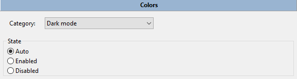
1. 深色模式 – 启用或禁用黑暗模式支持（仅适用于 Windows 10 1809 及更高版本）。状态：
自动 – 系统设置将被使用。
启用 – 强制启用。
禁用 – 强制禁用。
2. 查看器 – 由内置的 文件查看器 使用的颜色设置（查看模式的描述请参见 这里）：
书籍模式 – 对于“书籍”查看模式，您可以设置文本颜色和背景颜色。
图像模式:
背景 1： – 在查看图像时设置窗口的背景颜色。
背景 2： – 如果 显示透明度 被启用，内部查看器将使用棋盘图案作为背景来指示透明度，而 背景 2 定义了方块的颜色。如果未设置，查看器将自动计算该值：对于深色背景，将使用浅色方块，反之亦然。
3. 比较程序 – 对于内部 比较程序工具：您可以更改添加、删除和修改行的颜色，以及二进制模式下不同字符的颜色。
4. 日志 – 设置日志窗口中信息消息、错误消息和成功操作消息的文本颜色的选项。此外，这些颜色也用于验证校验和的结果窗口中。
5. 同步目录 – 用于内部 目录同步 工具：
左侧： – 选定用于复制或删除的文件在左侧。
右侧： – 右侧选择用于复制或删除的文件。
未知: – 文件名称相同，但不完全相同。
6. 驱动器可用空间指示器 – 在这里您可以更改驱动器可用空间指示器的外观：
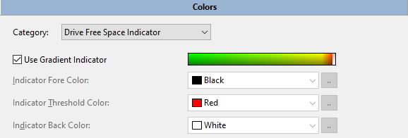
Double Commander可以显示渐变（从绿色到红色）或简单的单色指示器，在第二种情况下，您可以选择颜色和背景。 指示器阈值颜色将在可用磁盘空间少于 10%时使用。
指示器示例是可点击的，因此您可以查看它的外观。
本节包含文件面板外观的设置：
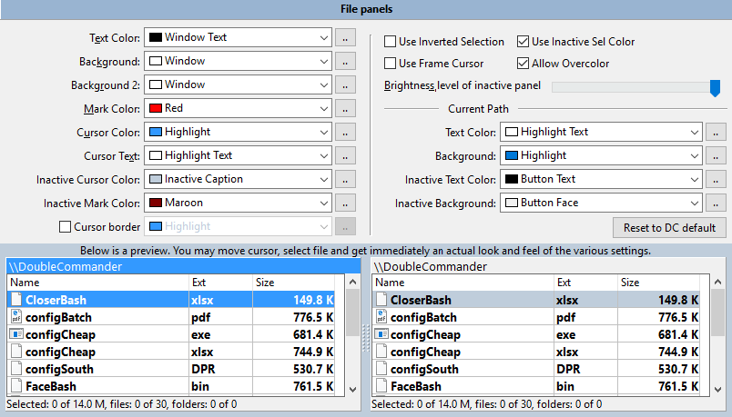
这里的颜色设置是两个文件面板的全局设置。这些设置可以通过创建自定义列样式来覆盖，自定义列样式可以为面板中的每个选项卡设置自己的颜色设置等！有关如何做到这一点的详细信息，请参见 文件视图 > 列 > 自定义列。您应该调整当前的列样式（默认情况下为 默认）或创建自己的样式并将其应用于任何选项卡。
在这里，您可以选择用于处理文件面板的颜色：文本颜色、背景、背景 2、标记颜色、光标颜色、光标文本、非活动光标颜色、非活动标记颜色，以及 光标边框（如果您不使用框架光标）。通过这两个背景选项，您可以在面板中制作交替条纹，如某些截图所示。
使用反向选择 – 反转标记文本和光标下标记文本的颜色。
使用非活动选择颜色 – 使光标在非活动面板中也能显示。
使用框架光标 – Double Commander将使用框架而不是实心矩形。
允许叠加着色 启用使用除默认颜色以外的颜色来表示文件名的功能（请参见 颜色 > 文件类型 部分）。
在当前路径参数组中，您可以更改活动和非活动文件面板的当前目录栏 的文本颜色和背景颜色。
您还可以降低非活动面板的亮度。
窗口底部有一个预览区域，您可以一次性查看所有更改。
重置为 DC 默认按钮将所有参数重置为其默认值。
网格颜色也可以更改，但只能手动更改。您需要关闭应用程序，打开colors.json文件，并替换GridLine键在FilePanel对象中的值。（不要忘记，
colors.json 中的颜色存储在两个配置文件中：“Light”用于浅色主题，“Dark”用于深色主题。）
关于颜色格式：Double Commander
以$BBGGRR格式将颜色值存储为十进制数。例如，如果您想使用靛蓝色#4B0082（$RRGGBB），那么进行重新排列，您将得到82004B，现在您需要将这个十六进制数转换为十进制。或者，您可以暂时为某种类型的文件添加颜色（见下文），通过名称或掩码在
colors.json 中找到它，复制值并删除。
在这里，您可以指定应该使用不同颜色的文件类型。必须启用允许叠加着色 参数（默认启用）。
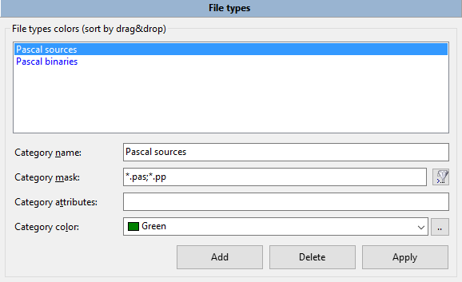
在 类别名称 中，您可以写文件的描述、它的功能或它打开的程序。
在行 类别掩码 中输入一个通配符掩码以匹配文件类型（符号 "*" 表示匹配任意数量的字符，符号 "?" 表示匹配任意一个字符）。您可以在这里使用分号 ";"
输入多个文件类型，且它们之间不需要空格。您还可以使用搜索模板 (  )，包括使用内容插件的搜索。
)，包括使用内容插件的搜索。
在类别属性中，您可以放置文件属性，DC 将匹配任何具有匹配属性的文件（如果使用搜索模板则不可用）。文件属性由以下模板指定：
Windows: [d 或 l]rahs[c 或 e]tp
Unix/Linux: [b, c, d, f, l 或
s]rwxrwxrwx
即模板必须与文件列表中的属性文本字符串匹配。值的描述：
| Windows 中的属性 | |
|---|---|
| 属性字母 | 含义 |
|
a
|
档案 |
|
c
|
压缩（NTFS 压缩） |
|
d
|
目录 |
|
e
|
加密（EFS 加密） |
|
h
|
隐藏 |
|
l
|
符号链接 |
|
p
|
稀疏 |
|
r
|
只读 |
|
s
|
系统 |
|
t
|
临时 |
| Unix/Linux 中的属性（文件类型） | |
|---|---|
| 属性字母 | 含义 |
|
b
|
块设备 |
|
c
|
字符设备 |
|
d
|
目录 |
|
f
|
命名管道 (FIFO) |
|
l
|
符号链接 |
|
s
|
接口 |
Unix/Linux 模板的第二部分显示权限：读取 (r)、写入 (w)、执行 (x)。这些值按以下顺序分为三组：用户（所有者）、用户组、其他所有人。
如果属性不应设置，则必须用“-”符号替换，不必要的属性应隐藏：符号“*”表示匹配任意数量的字符，符号“?”表示任意一个字符。例如，?r*（Windows）或?r-*（Linux）将找到所有只读文件和文件夹。
您可以从列表中选择一种颜色或使用“..”按钮指定您自己的颜色。
请在自定义后不要忘记点击“应用”按钮。
Double Commander从上到下检查列表，直到找到第一个匹配项：列表中较高的规则将覆盖下面的任何规则。
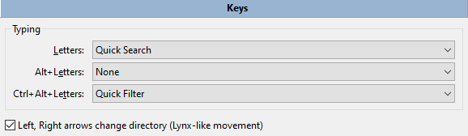
在这里，您可以设置在活动文件面板中按下某些键时的操作：字母，Alt+字母，Ctrl+Alt+字母。您可以选择以下操作之一：不执行任何操作，将焦点设置到命令行并输入命令，运行。
左箭头和右箭头更改目录（类似 Lynx 的移动） – right arrow 打开光标下的目录或运行程序， left arrow 打开父目录。
在本节中，您可以设置键以启动命令，并为这些命令指定参数。
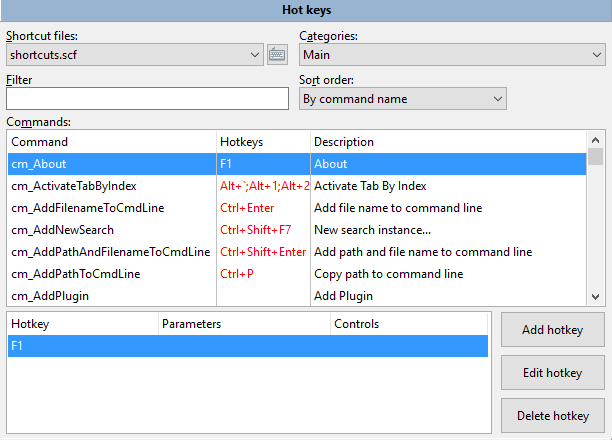
快捷文件 – 一个下拉菜单，包含一组带有快捷键的文件列表。它们存储在程序设置文件的目录中。
右侧是与文件相关的菜单按钮：
当前文件的操作：立即保存，重命名，复制和删除。
恢复 DC 默认设置
切换到上一个和下一个类别的命令。
命令用于切换命令表的排序顺序（见下文）。
类别 – 显示快捷键组合的类别：主，复制/移动对话框，比较，编辑评论对话框，编辑器，查找文件，批量重命名工具，同步目录，查看器。
过滤器 – 使您能够更快速地搜索内部命令。
排序顺序 – 切换命令表的排序顺序：
按命令名称。
通过快捷键（分组） – 如果分配了多个快捷键，它们将以分号“;”分隔列出。
通过快捷键（每行一个）
命令 – Double Commander 中可用的 内部命令 列表。该列表以三列的表格形式显示：
命令（内部命令的名称）。
快捷键（分配的快捷键）。
描述（简短描述）。
窗口底部的表格显示了所选命令的分配键盘快捷键、参数和界面元素（见下文）。
添加快捷键 – 将打开一个添加快捷键的窗口。
编辑快捷键 – 将打开相同的窗口，但快捷键和其他选项已设置好。
删除快捷键 – 将删除列表中选定的快捷键。
添加快捷键的窗口：
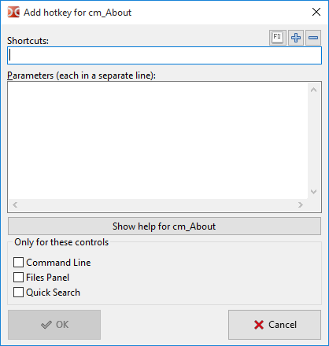
快捷键 – 新快捷键将在此显示。点击框内并按下键盘上的组合键以输入新的快捷键。如果新的组合键已被用于其他命令，Double Commander将显示警告。
参数（每个参数单独一行）： – 允许为命令设置一些参数。大多数参数必须以 参数=值 的形式添加（除非另有说明），不带引号，并且每个参数单独一行。
仅适用于这些控件 – 快捷键仅在所选界面元素（命令行、文件或快速搜索面板）获得焦点时有效。
以下按钮位于窗口的右侧：
F1 按钮将显示一个菜单，其中列出了按字母和修饰符分组的可用免费键盘快捷键。
“+”按钮将添加另一个键盘快捷键字段（最多五个）。
“-”按钮将从列表中删除最后一个快捷方式。
您可以通过两种方式为内部命令设置多个快捷键：使用 添加快捷键 按钮，然后多次点击 "+" 按钮，或者多次点击 添加快捷键 按钮。第二种方式允许使用选定的命令与不同的参数。
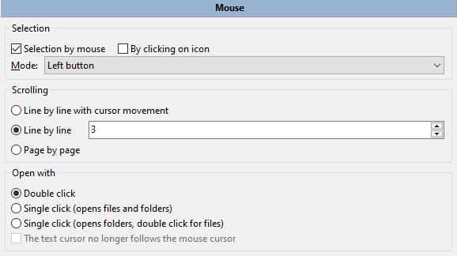
第一组参数是选择：
鼠标选择 – 使能够使用鼠标选择和取消选择文件和文件夹。
通过点击图标 – 允许通过单击图标来选择文件。在缩略图视图中，通过点击图像的左侧部分（1/4 或 25%）来选择图标时有效。
模式 – 设置左键或右键。
请参阅选择文件 小节以获取详细信息。
滚动 – 使用鼠标滚轮滚动面板中文件列表的能力。
逐行移动光标 – 光标将在面板上向上或向下移动，然后再进行滚动。
逐行 – 光标保持在文件上，滚动立即发生。您还可以指定行数。
逐页 – 与之前相同，但滚动是按页而不是按行（滚动速度更快）。
打开方式 – 将决定在面板中使用鼠标按钮点击显示的文件列表中的元素时将启动的操作：
双击是启动该操作所必需的（默认）。
单击一下即可打开文件和文件夹。
单击只会打开文件夹。对于文件，需要双击。
文本光标不再跟随鼠标光标 – 用于最后两个值。如果启用单击，默认情况下文本光标将跟随鼠标光标：这有助于避免意外打开文件或文件夹。如果您不需要它（或不喜欢它），可以将其禁用。
本节包含与拖放 相关的设置。

在放置后显示确认对话框 – 有助于避免在活动文件面板内或面板之间拖放文件时发生意外错误：Double Commander将显示一个确认对话框，类似于正常复制或移动文件时的提示。
下一个功能仅在 Windows 中可用：您可以将网页浏览器或文字处理器（例如 LibreOffice Writer 或 Microsoft Word）中选定的文本拖放到面板中并保存。在这里，您可以选择文件格式（RTF、HTML 或纯文本文件）、编码并启用自动命名生成。
在本节中，您可以设置各种文件排序选项以及日期/时间和大小格式。
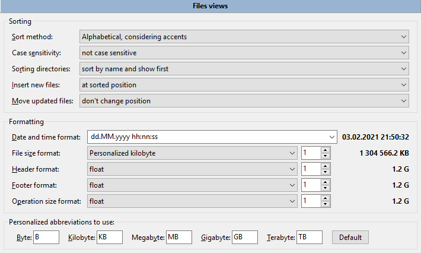
排序方法 – 设置文件面板中的排序方法：
按字母顺序，考虑重音 – 此方法将按字母顺序排序，考虑系统语言和区域设置的特殊性：还将考虑额外字符（例如，德语中的变音符号和其他发音符号或俄语中的字母“ё”）。
按字母顺序和特殊字符排序 – 与之前的方法类似，但列表将首先按特殊字符和标点符号排序，然后再按字母排序。
自然排序：字母和数字 – 这种方法将数字按数值排序：例如，“3”会在“20”之前显示，因为 20 大于 3。
自然排序，包含特殊字符 – 与之前的方法类似，但也包括按特殊字符和标点符号排序。
区分大小写 – 补充所选方法：
不区分大小写；
根据区域设置 (aAbBcC);
先大写后小写 (ABCabc)。
排序目录 – 设置文件列表中目录的位置：
按名称排序并显示第一个；
像文件一样排序并首先显示；
像文件一样排序。
插入新文件 – 设置新文件在列表中的位置：
在文件列表的顶部；
在目录之后（如果目录在文件之前排序）；
在排序位置；
在文件列表的底部。
移动更新的文件 – 如果当前用于排序的文件属性（修改日期、大小等）发生更改，则设置位置：
不要改变位置；
使用与新文件相同的设置；
到排序位置。
格式化组中的第一个参数是 日期和时间格式。您可以从下拉列表中选择现有模板之一，或使用日期和时间格式字符设置您自己的模板。
格式化字符如下所示（基于 Free Pascal 文档）。某些值取决于您的区域设置！
作为示例，我们将使用 2021.01.24 09:06:02（即 yyyy.mm.dd hh:mm:ss）和美国地区。
| 可能的角色 | ||
|---|---|---|
| 字符 | 描述 | 示例 |
|
c
|
短日期格式和长时间格式（如果时间不为零） | 1/24/2021 9:06:02 |
|
f
|
与 c 相同，但即使时间为零也会添加时间 | 1/24/2021 9:06:02 |
|
d
|
月份的日期 | 24 |
|
dd
|
月份的日期（前导零） | 24 |
|
ddd
|
星期（缩写） | Sun |
|
dddd
|
星期（完整） | Sunday |
|
dddddd
|
短日期格式 | 1/24/2021 |
|
dddddd
|
长日期格式 | Sunday, January 24, 2021 |
|
m
|
如果前面有 h 或 hh 说明符，则为月份或分钟 | 1 |
|
mm
|
如果前面有 h 或 hh 说明符，则以月份或分钟表示，前导零 | 01 |
|
mmm
|
月（缩写） | Jun |
|
mmmm
|
月份（满月） | January |
|
yy
|
年（两位数） | 21 |
|
yyyy
|
年（带世纪） | 2021 |
|
h
|
小时 | 9 |
|
hh
|
小时（前导零） | 09 |
|
n
|
分钟 | 6 |
|
nn
|
分钟（前导零） | 06 |
|
s
|
第二 | 2 |
|
ss
|
秒（前导零） | 02 |
|
z
|
毫秒 * | 1 |
|
zzz
|
毫秒（前导零）* | 001 |
|
t
|
短时间格式 | 9:06 |
|
tt
|
长时间格式 | 9:06:02 |
|
am/pm
|
使用 12 小时制时钟，并相应地显示上午和下午（也可以是 AM/PM 、
a/m 或
A/M ）；例如，t AM/PM
|
9:06 AM |
|
/
|
插入日期分隔符 | / |
|
:
|
插入时间分隔符 | : |
|
文本
|
字面文本；例如，yyyy "年" |
2021 年 |
| * 仅限 Windows | ||
下一个参数设置文件大小格式：
文件大小格式 – 将在文件面板中使用。
标题格式 – 将用于驱动器列表和可用空间标签。
页脚格式 – 将在文件面板的状态栏中使用。
操作大小格式 – 将在文件操作对话框中使用：复制、移动、计算校验和等。
在右侧，您还可以设置小数分隔符后的位数（即数字的整数部分和小数部分的分隔符）：0、1、2 或 3。
文件大小单位：字节、千字节、兆字节、吉字节、太字节或浮点数（Double Commander将根据大小自动选择单位）。
“个性化”这个名称意味着Double Commander将使用下面列表中的个性化缩写。默认按钮将把它们重置为所选语言的默认值（在相应的语言文件中指定）。
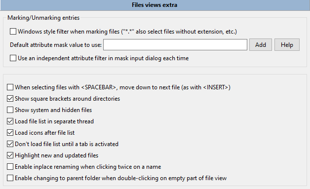
标记/取消标记条目：
在标记文件时使用 Windows 样式过滤器（“*.*”也会选择没有扩展名的文件等） – 默认情况下，掩码“*.*”匹配任何具有扩展名的文件名，对于任何文件名使用掩码“*”。如果启用，掩码“*.*”将匹配任何文件。
默认属性掩码值 – 将用于以下命令：全选 (
cm_MarkMarkAll )、全不选 (
cm_MarkUnmarkAll )、反选 (
cm_MarkInvert )、选择一个组 (
cm_MarkPlus ) 和 取消选择一个组 (
cm_MarkMinus )。例如，如果您希望这些命令仅适用于文件，请指定 d-。添加
按钮将打开文件属性选择窗口，您可以使用它或手动输入。有关文件属性及其使用的更多信息，请参见 这里 。
每次在遮罩输入对话框中使用独立属性过滤器 – 如果启用，属性过滤器将被添加到 选择一个组 ( cm_MarkPlus ) 和 取消选择一个组 ( cm_MarkMinus ) 命令对话框中。
在使用 <SPACEBAR> 选择文件时，向下移动到下一个文件（与 <INSERT> 相同） – 在选择时使用 Space 键将光标向下移动。默认键是 Shift+Down 或 Shift+Up 。
在目录周围显示方括号 – 有助于在图标被禁用时，直观地区分目录和文件。您还可以使用任何符号代替它们，参见
<FolderPrefix> 和 <FolderPostfix> 参数的描述 在这里 。
显示系统和隐藏文件 – 如果启用，Double Commander 将显示具有“隐藏”或“系统”属性的文件和文件夹（Windows）或名称以点字符开头的文件（Linux 和其他类 Unix 系统）。这也可以从 主菜单 中更改。
参数 在单独线程中加载文件列表 和 在文件列表后加载图标 旨在加快面板中文件列表的显示速度，即在打开大型目录时，应用程序窗口会更少地卡顿。
在激活选项卡之前不要加载文件列表 – 启动时，Double Commander不会加载在上一个会话中打开的非活动选项卡的文件列表。
突出显示新文件和更新的文件 – 如果启用，当前正在创建或修改的文件名称将闪烁。
启用双击名称时的就地重命名 – 是一种额外的能力，可以使用左键单击重命名文件（这不依赖于选择鼠标的键），与 Windows 资源管理器相同。单击后，鼠标光标必须保持静止至少一秒钟。在 鼠标设置 部分，应选择文件和文件夹的双击或仅文件。
启用在文件视图空白部分双击时切换到父文件夹 – 是一个简化目录导航的附加功能。但如果您使用的是列集，并且当前目录中的文件列表无法适应面板（即您看到一个垂直滚动条），则不适用。
这里只有两个参数。

显示文件扩展名: 直接在文件名后 或 对齐（使用 Tab 键）。在第二种情况下，文件扩展名将单独显示，右对齐于列的右侧。
列大小：Double Commander将自动设置大小（大小将取决于文件名的长度），或者您可以设置列的宽度（以像素为单位）或列的数量。

第一组是 显示网格：
垂直线 – 在面板中启用垂直网格线。
水平线 – 在面板中启用水平网格线。
下面的截图展示了这种微妙的网格效果。左侧的截图启用了垂直和水平线，而右侧的截图则没有。
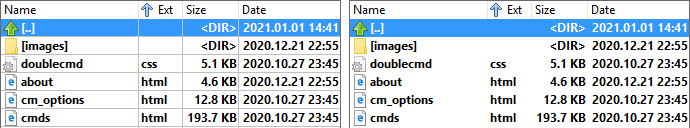
可以更改线条的颜色，查看更多细节 这里 。
自动填充列 – 如果启用，当调整窗口大小时（或如果存在空闲空间），Double Commander将调整在下一个选项中选择的列 自动调整列：（第一个或最后一个）。水平滚动条将不可用。
列标题与值对齐 – 如果启用，Double Commander将使列标题与内容对齐（而不是左对齐）。
如果列的内容大于其宽度：
截断文本到列宽 – 有时列中的文本可能会重叠到其他列中。此选项会在列边界截断任何多余的文本。
如果文本不适合列，则扩展单元格宽度 – 如果文本不适合且相邻单元格为空，则文本也会占用相邻单元格。
在本节中，您可以自定义面板外观、列、颜色、字体等。Double Commander在这方面非常可配置。
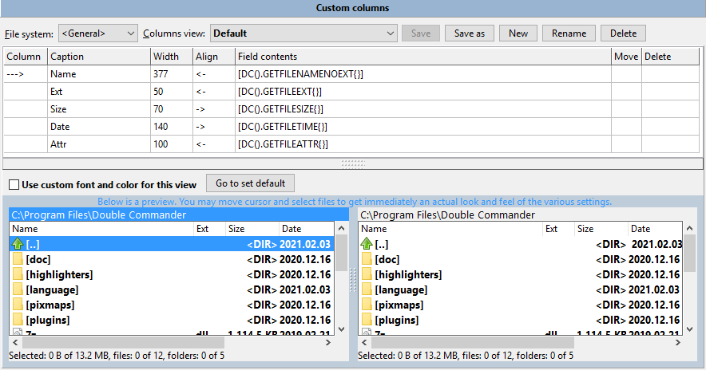
窗口底部有一个预览区域，因此您可以一次性查看所有更改。您可以移动光标并选择文件，以立即获得各种设置的实际外观和感觉。
文件系统 – 允许切换到 WFX 插件的列设置（如果安装的插件支持的话）。
列视图 – 现有列样式的列表。有一个默认样式 默认。
保存 – 保存所选列集中的更改。
另存为 – 允许将选定的列集（原样或更改后）以新名称保存。
新建 – 基于所选的列集创建一个新的列集。名称相同 + 当前日期和时间。
重命名 – 将提示输入新名称。
删除 – 删除选定的列集。
下面是一个包含所选集合列的表格，在这里您可以设置列的数量、名称、内容、位置和大小。表格中的行数等于集合中的列数。添加新列：使用 down arrow 键或在表格附近的空白区域右键单击并选择 添加列。
这些是决定该列表格的参数（点击框以编辑它们）：
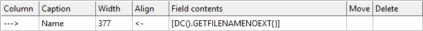
列 – 显示所选列的指标。
标题 – 指定将在制表符标题栏 中显示的列名。您可以设置任何您喜欢的名称。
宽度 – 列宽（以像素为单位），将在程序启动时设置。注意：宽度取决于列的内容，例如，文件扩展名列的宽度会很小。
对齐 – 设置列内容的对齐方式。变体包括：
"<-" – 左对齐;
"->" – 右对齐;
"=" – 居中对齐。
字段内容 – 设置列的基本内容。当选择一个单元格时，右侧会出现“+”按钮，您可以选择 Double Commander 的内部字段（子菜单“DC”）或已安装的 WDX 插件的字段（子菜单“插件”）。内部字段列表：
GETFILENAME – 文件名和扩展名 ( text.txt )。
GETFILENAMENOEXT – 文件名和无扩展名 ( text )。
GETFILEEXT – 文件扩展名（从点到末尾，例如 txt ）。
GETFILESIZE – 文件或目录大小。默认情况下，外观将取决于在 文件视图 部分中选择的选项，但所有可能的大小格式也可用。
GETFILETIME – 文件或目录的修改日期。外观将取决于在 文件视图 部分中选择的选项。
GETFILECREATIONTIME – 文件或目录创建日期。
GETFILELASTACCESSTIME – 文件或目录最后访问日期。
GETFILECHANGETIME – 文件或目录状态更改日期。
GETFILEATTR – 文件或目录属性。您可以选择字符串或数字（八进制）值。在 Windows 中，如果在文件面板中显示 Unix 属性（例如，使用 FTP 插件），则可以使用八进制值。有关字符串值的详细描述，请参见 这里 。
GETFILEPATH – 当前项目的路径。用途：通常用于搜索结果。
GETFILEGROUP – 显示文件的组。
GETFILEOWNER – 显示文件的拥有者。
GETFILELINKTO – 显示路径和文件，即与此符号链接相关的内容。
GETFILETYPE – 文件类型（如在 Windows 资源管理器或 MIME 类型中）。
GETFILECOMMENT – 来自 descript.ion 的文件或目录描述（注释）（详细信息见这里 ）。
GETFILECOMPRESSEDSIZE – 压缩文件大小（如果使用 NTFS 压缩，则为实际大小）。
移动 – 允许移动行（这相当于重新排序列）。在移动框中双击，你会看到一种旋转器出现，点击上部可以将行向上移动（列向左移动）。
删除 – 允许删除任何行。要删除：点击该行的删除框。然后再次点击，这时会出现一个删除符号。如果您第三次点击，该行将从表格中删除。
接下来，您可以更改文件面板的外观。
去设置默认 – 打开部分 颜色 > 文件面板 。
为此视图使用自定义字体和颜色 – 允许仅为这一组列更改文件面板的外观（如果需要，也可以单独为每一列更改）。您可以覆盖文件面板的字体以及来自颜色 > 文件面板的全局设置：
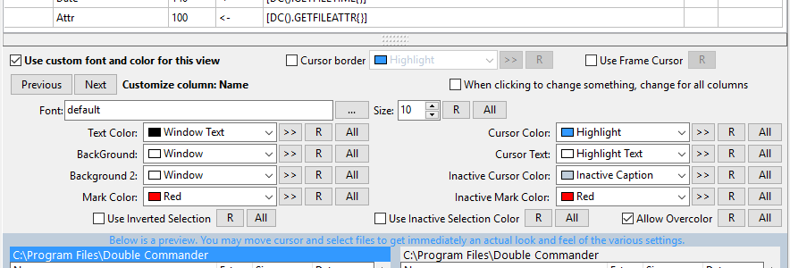
注意：光标边框 和 使用框架光标 仅适用于整个集合。
上一个, 下一个 – 切换列。
自定义列 – 显示自定义列的名称。
>> – 从调色板中选择任意颜色的按钮。
R – 恢复默认值。
全部 – 将修改应用于所有其他列。
插件是增强Double Commander功能的扩展。
开始时，有一些常规设置。
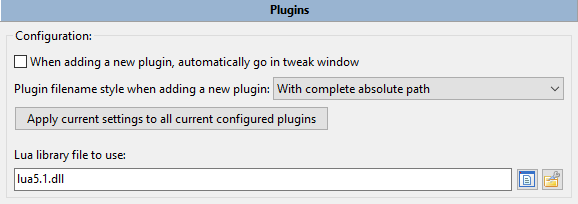
添加新插件时，自动进入调整窗口 – 请参阅下面的调整按钮的描述。
添加新插件时的插件文件名样式 – 在这里您可以选择添加插件时路径的设置方式：
带有完整的绝对路径。
相对于%COMMANDER_PATH% 的路径。
相对于指定路径。
您还可以将所选方式应用于已添加的插件。
Lua 库文件使用 – Lua 库的全名，或者如果文件位于程序目录或库的系统目录中，则仅为文件名。此路径可能相对于 Double Commander 可执行文件。 （Lua 脚本可用于自动化和内容插件，更多详细信息请参见这里。）
有几种类型的插件：
1. 打包插件 (WCX)
打包器插件用于解压特定类型的文件，通常是压缩文件格式。一些插件还支持创建新的压缩文件和修改现有的压缩文件。
有一些插件可以保存所选文件的列表或使用批处理：创建链接、转换文件、根据特定条件复制等。
顺序很重要：在选择合适的插件时，Double Commander 从上到下按扩展名开始检查。使用 按扩展名/按插件 按钮切换列表视图并进行拖放。
2. 内容插件 (WDX)
内容插件旨在获取文件的属性或其内容的信息（例如，EXIF 或 ID3 标签）。您可以在文件搜索或批量重命名工具、列集、工具提示中使用这些数据。
Double Commander还支持用 Lua语言编写的内容插件（脚本的添加方式与普通插件相同）。示例可以在程序文件夹中找到（plugins/wdx/scripts ）。
3. 文件系统插件 (WFX)
文件系统插件使用它们自己的文件系统或提供对其他文件系统和设备（本地或远程）的访问。例如，FTP 服务器、网络目录、移动设备。它还可以是文件列表、正在运行的进程和服务，或 Windows 注册表。
4. Lister 插件 (WLX)
内置查看器显示纯文本文件、某些图像格式和控制台命令输出，插件允许扩展此列表：电子文档和数据库、音频和视频文件、字体文件、压缩文件内容、某些文件的详细信息、带有语法高亮的源代码文件。
顺序很重要：在选择合适的插件时，Double
Commander 从上到下开始检查。
5. 搜索插件 (DSX)
搜索插件是DC自己的插件类型，这些插件使用控制台程序查找文件（例如，Locate、Everything 或 Recoll）。DSX 插件接口允许从“标准”和“高级”选项卡发送搜索参数值 。
按钮：
添加 – 打开文件选择对话框。或者，您可以使用内部命令 cm_AddPlugin（插件也可以自动安装）。
禁用 – 允许暂时禁用所选插件。
移除 – 从列表中移除所选插件（但不包括插件文件！）。
调整 – 动作取决于插件的类型：- WCX：更改插件路径，设置文件扩展名和支持的功能；
- WDX 和 WLX：更改插件路径、显示名称或检测字符串；
- WFX：更改插件路径或显示名称。
配置 – 打开插件的设置窗口（如果所选插件支持此功能）。
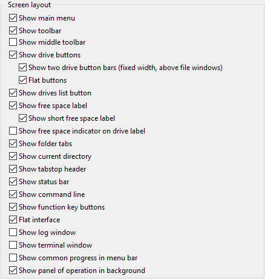
您可以在这里更改主窗口的布局。我想，上面的截图（布局）中解释了所有可用的选项。下面的截图展示了在未选择所有布局选项时，DC 的外观。
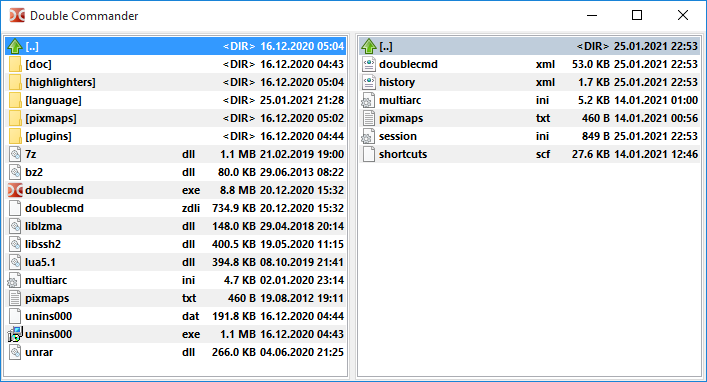
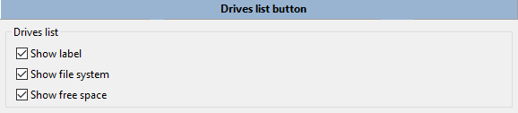
在本节中，您可以选择Double Commander将在 驱动器列表菜单 中显示哪些附加信息：驱动器标签、文件系统和可用空间。
在本节中，您可以启用树形视图菜单并选择其使用位置。
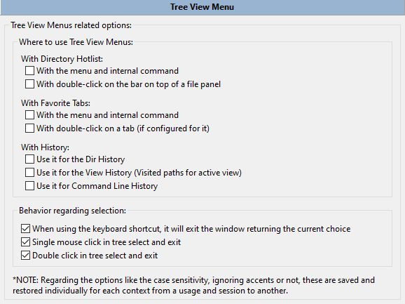
树形视图菜单是一种在单独窗口中以树形方式显示一些Double Commander菜单的方法：常用文件夹列表、收藏标签、目录和命令行历史记录。这种内容呈现方式和过滤器将帮助您快速选择所需的菜单项。
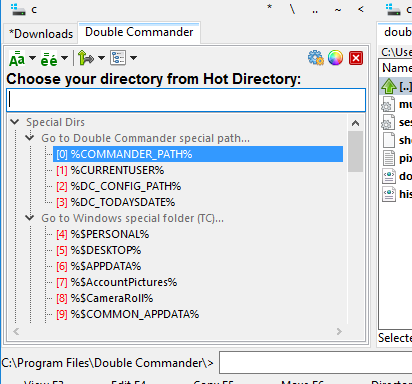
使用相应内部命令的参数，您可以设置树视图菜单的位置：
菜单将从活动面板的左上角显示；
菜单将在当前鼠标光标位置显示。
参数可以在 快捷键设置 中指定，或者在 工具栏 上添加一个按钮。
Double Commander还可以将主菜单和工具栏显示为树形结构（始终位于其窗口的中心），请参阅命令的描述 cm_ShowMainMenu 和 cm_ShowButtonMenu 。
在这里，您可以根据自己的喜好自定义菜单的外观，预览将显示所有更改，保存之前请查看。
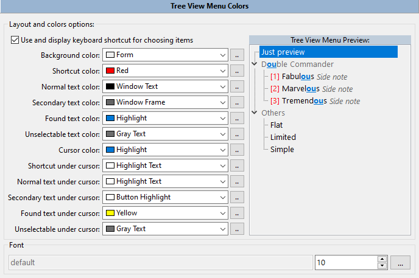
2.11. 工具栏 和 工具栏 > 垂直工具栏
请查看专门的 工具栏 帮助页面，了解如何使用和配置它。
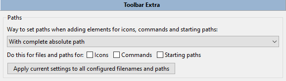
在本节中，您可以选择在添加图标、命令和启动路径时如何设置路径：
带有完整的绝对路径。
相对于 %COMMANDER_PATH% 的路径。
相对于指定路径。
您还可以将所选方式应用于已添加的路径。
本节包含与文件操作相关的设置。
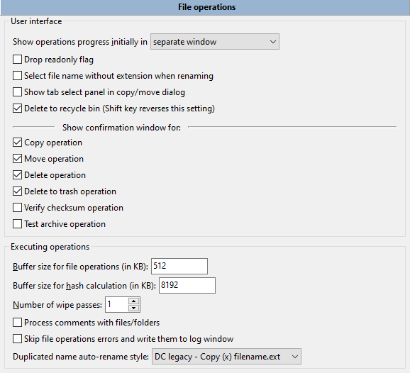
初始显示文件操作进度在 – 设置文件操作进度的初始显示方式和位置：
单独窗口;
最小化单独窗口;
操作面板：功能键按钮栏上方的特殊面板将被使用
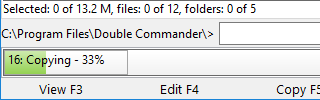
（您可以通过用鼠标单击它来切换到在单独窗口中显示进度）
删除只读标志 – 如果启用，Double Commander 将在 Windows 中删除此标志，并在 Linux 中添加“w”属性。这在从 CD/DVD 介质复制文件时非常方便，因为默认情况下文件会保留只读属性。
重命名时选择不带扩展名的文件名 – 如果启用，使用 F2 键重命名时将选择文件名中最后一个点之前的所有字符，否则将选择整个文件名。
在复制/移动对话框中显示选项卡选择面板 – 如果目标面板有多个选项卡，在复制/移动时您可以选择目标选项卡：
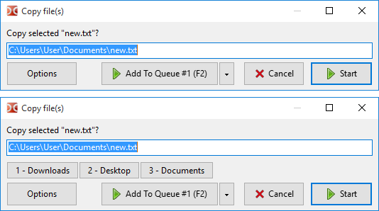
删除到回收站（Shift 键可反转此设置） – 如果启用，Double Commander将在您按下 F8 或 Del 时将选定的文件或光标下的文件删除到垃圾箱（回收站），并在您使用 Shift+F8 或 Shift+Del 时永久删除。如果未选中， F8 或 Del 将永久删除它们。
显示确认窗口以进行 – 允许选择Double Commander将显示确认对话框的文件操作。默认情况下选择最大安全行为。
以下参数与操作的执行直接相关。
文件操作的缓冲区大小（以 KB 为单位）和哈希计算的缓冲区大小（以 KB
为单位）参数设置了用于复制、移动、拆分或合并文件、按内容搜索文件和计算校验和等操作的分配内存大小。您应该记住，没有通用的值，但您可以尝试找到更合适的大小。
注意：在 Windows
中，复制函数不使用第一个参数，因为使用的是系统函数进行复制。
擦除次数 – 在这里您可以指定重写次数以安全删除文件 。
处理带有文件/文件夹的评论 – 如果启用，并且您有一个附带评论的文件/文件夹，当您将其复制或移动到另一个文件夹时，评论将与文件/文件夹一起复制或移动到目标位置。
跳过文件操作错误并将其写入日志窗口 – 如果发生文件操作错误，错误消息将出现在面板下方的日志窗口中，而不是弹出对话框中。这可能很有用，因为错误窗口会暂停操作。
重复名称自动重命名样式 – 如果目标目录中已经存在同名文件，则设置文件自动重命名模板（即当您在复制/移动对话框中选择自动重命名源文件或自动重命名目标文件时）：“复制 (x) 文件名.ext”、“文件名 (x).ext”或“文件名(x).ext”，其中“x”是计数器（2、3、4，依此类推）。
请查看查找文件 帮助页面上的描述。
请查看多重重命名工具 帮助页面上的描述。
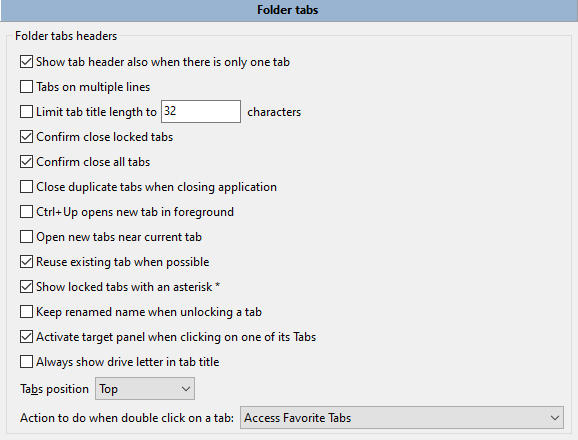
当面板上只有一个标签时也显示标签头 – 如果此选项被禁用且面板上只有一个标签，则不会出现标签头（通常这在视觉上更具吸引力）。
多行标签（仅限 Windows）– 如果文件夹标签无法放在一行中，则它们将被放置在多行中。否则，向右会显示滚动按钮（GTK2：在左右两侧）。
限制标签标题长度为 – 名称较长的标签将被限制为此长度，如果超过此值，显示的名称将被截断。
确认关闭锁定的标签页 – 如果启用，则会提示您确认是否希望关闭锁定的标签页。否则，该标签页将像普通标签页一样关闭。
确认关闭所有标签页 – 如果选中并执行关闭所有标签页命令，此选项将提示您确认是否希望移除所有非活动标签页。
关闭应用程序时关闭重复标签页 – 如果启用，Double Commander将检查打开的标签页列表并关闭重复标签页（每个面板单独处理！），只有第一个标签页会被保存（从左侧开始计数）。
Ctrl+Up 在前台打开新标签 – 此选项改变命令在新标签中打开文件夹 ( cm_OpenDirInNewTab ) 的行为：如果启用，则Double Commander将为光标下的目录打开一个新标签并切换到该标签。
在当前标签页附近打开新标签页 – 如果启用，新标签页将在当前活动标签页的右侧创建。如果未启用，新标签页将添加到最后一个标签页的右侧。
尽可能重用现有标签 – 对于在新标签中更改目录的锁定标签：如果所选文件夹在任何标签上已经打开，则将激活该标签，而不是创建新标签。
显示标签关闭按钮 （仅限类 Unix 系统）– 如果选中，将在标签上出现一个小“x”按钮，允许点击它以关闭标签。
显示带星号的锁定标签 * – 用于区分锁定和未锁定的标签。锁定的标签将标记为“*”。标签 Downloads 是锁定的：
解锁标签时保留重命名的名称 – 当我们将标签的状态从“锁定标签”更改为“正常标签”时，Double Commander会返回通常的标签名称（当前文件夹名称）：此选项允许保留更改后的名称。
点击其中一个标签时激活目标面板 – 如果启用，当您在另一个面板的标签上单击鼠标时，焦点将自动转移到该面板（它将成为活动面板）。此外，在以这种方式切换面板时，光标位置将被保留。
始终在标签标题中显示驱动器字母（仅限 Windows）– 在文件夹名称之前显示驱动器字母和冒号，例如“c:plugins”。
标签位置 – 将文件面板的文件夹标签放置在顶部或底部。
双击标签时要执行的操作： – 您可以选择以下操作之一：
什么都不做；
关闭此标签页；
访问收藏标签（保存当前标签，加载保存的集合或配置）；
显示与"标签" 菜单中相同项目的选项卡弹出菜单。
保存的标签集列表可以在"收藏夹" 菜单中以及通过cm_LoadFavoriteTabs命令调用的弹出菜单中找到。
在本节中，您可以管理它们：更改顺序、名称，删除不必要的内容，或在子菜单中排序或分组。
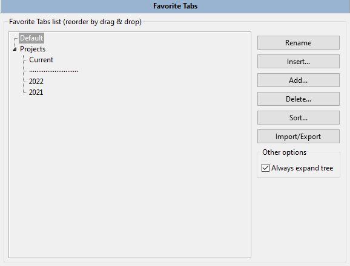
您还可以将条目导出到选定的目录并导入它们。每个条目将保存到一个单独的 .tab 文件中（如果需要，可以使用 cm_LoadTabs 命令加载该文件中的标签）。
在条目的上下文菜单中添加了一些典型操作。
本节包含收藏标签的其他设置。
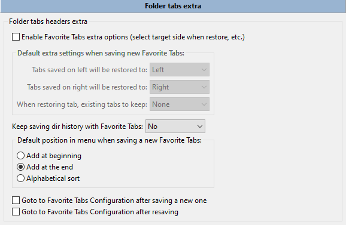
启用收藏标签的额外选项（恢复时选择目标侧等） – 默认情况下，保存的标签将在同一面板中恢复，并将替换所有打开的标签，您可以通过以下方式更改：
左侧保存的标签将恢复到：
右侧保存的标签将恢复到：
恢复标签时，现有标签需保留： – 即收藏标签将被添加到已打开的标签中。
每个参数可用的值如下：左、右、活动、非活动、两者或无。
保持使用收藏标签保存目录历史 – 启用或禁用为每个标签保存访问过的目录历史。
您还可以为每个选项卡单独应用这些参数。
保存新收藏标签时菜单中的默认位置 – 决定添加新集合的顺序：
在开头添加
添加在最后。
字母顺序。
您还可以选择在保存新设置或重新保存当前设置后自动打开收藏标签 设置部分：
保存新标签后，前往收藏标签配置
重新保存后转到收藏标签配置。
在这里，您可以选择文件名以记录Double Commander的操作（复制或移动文件、创建目录、启动外部应用程序等）。您还可以选择将记录哪些操作。
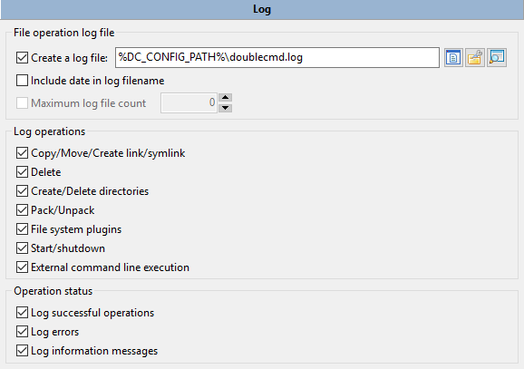
如果 在日志文件名中包含日期 被启用，Double Commander将为每一天创建一个单独的文件。在这种情况下，您可以设置日志文件的数量：较旧的文件将自动删除。
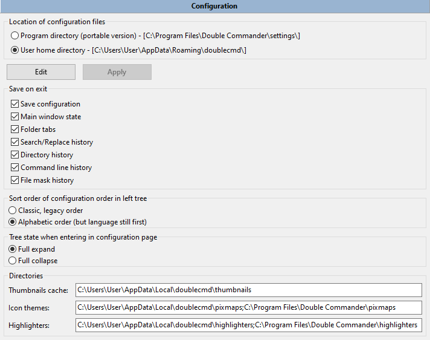
配置文件的位置 – 在这里您可以选择存储所有配置文件的位置（您也可以在这里看到完整路径）：
程序目录中的“settings”文件夹（便携版）。
用户主目录。
作为一个指示，Double Commander 在程序目录的“settings”文件夹中使用一个空的 doublecmd.inf 文件：如果该文件存在，Double Commander 将从“settings”文件夹加载配置文件并将其保存在这里，否则 Double Commander 将使用当前用户的文件夹。您可以手动添加 doublecmd.inf 文件以获得便携版本，或者通过将存储方式切换到用户文件夹来删除它。
如果您使用 --config-dir 参数启动 Double Commander，DC 将仅写入 在命令行上设置 并显示配置文件的完整路径。
要快速导航到包含配置文件的目录，您可以使用常用文件夹列表 菜单中的特殊目录子菜单，或使用%DC_CONFIG_PATH%变量。
按钮 编辑 和 应用 – 允许打开 doublecmd.xml 配置文件并手动更改设置。请记住，某些设置需要重启Double Commander才能生效。
注意（或小技巧）：这种方式允许立即应用设置而无需重启 DC（但并非所有设置都可以）：例如，您可以更改并立即应用文件面板中图标的大小，但您无法在不重启的情况下更改程序语言。
退出时保存 – 在这里您可以选择Double Commander在退出时保存什么。复选框保存配置启用或禁用保存：
主窗口状态 – 应用程序窗口的大小和位置。
文件夹标签 – 左侧和右侧面板中打开的标签列表。
历史：访问过的所有目录列表、在命令行中使用的命令、文件掩码以及文本的搜索和替换历史。历史记录中的最大条目数限制为 50。
您可以选择设置部分列表的外观：
左侧树中配置顺序 – 您可以选择经典（如在DC的源代码和帮助中）或字母顺序。在这两种情况下，语言部分将是第一个。
进入配置页面时的树状态 – 展开整个树或折叠。
目录 – 在这里您可以看到 Double Commander 可以用来存储缩略图缓存、图标主题和内部编辑器语法高亮文件的目录列表。您无法更改它们，这只是信息。
本节包含快速搜索/过滤 工具的设置。快速搜索用于在面板中搜索文件名，快速过滤将隐藏所有不符合条件的文件名。
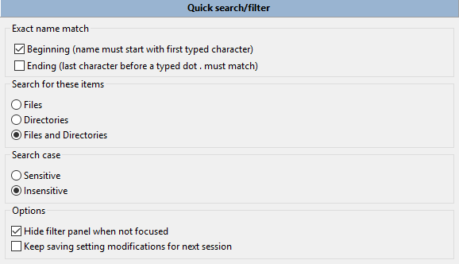
精确名称匹配：
开始（名称必须以第一个输入的字符开头） – 意味着输入的文本将匹配“text*”掩码，其中“*”可以是任意数量的任意字符。
结尾（在输入的点 . 之前的最后一个字符必须匹配） – 如果输入的字符中有一个点，则名称必须以这些字符结尾。例如，如果您输入“dx.l”，文件掩码将是“* wx.l *”。
如果没有选中任何内容，输入的字符可以位于文件名的任何部分。
我喜欢将开始（名称必须以第一个输入的字符开头）选中，然后我可以输入我正在寻找的文件名的第一个字符，然后是第二个字符，等等。以这种方式可以快速找到文件。
您可以在下面设置大小写敏感性，并选择您想要搜索的内容：仅文件、仅目录或两者。
这些选项可以直接在快速搜索/过滤栏中动态更改。您还可以在搜索和过滤之间切换。
选项：
当未聚焦时隐藏过滤面板 – 一旦您将焦点移到文件面板，快速搜索/过滤面板将自动隐藏。
保持保存设置修改以供下次会话使用 – 默认情况下，快速搜索面板中所有已更改的参数仅在程序关闭之前保留在内存中，此选项允许更改此行为。
本节包含在设置的其他部分中没有合适位置的参数：
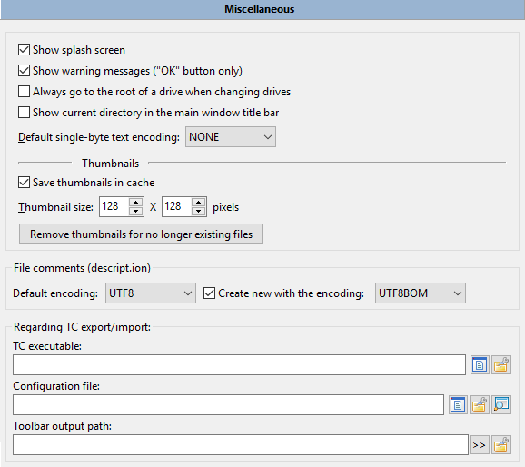
显示启动画面 – 如果启用，在显示主窗口之前，Double Commander将显示一个包含程序图标和版本、编译日期，以及 Lazarus、FPC 和操作系统版本的启动画面。
显示警告消息（仅“确定”按钮） – 如果启用，则显示警告消息。（例如，如果Double Commander由于目标目录中的文件系统限制无法设置文件的某些属性或特性。）
更改驱动器时始终转到驱动器的根目录 – 如果未选中，Double Commander将转到该驱动器上最后打开的目录（在这种情况下，您可以通过按其按钮两次转到驱动器的根目录）。
在主窗口标题栏中显示当前目录 – 如果启用，Double Commander 将在主窗口标题栏中显示当前文件夹的名称和活动面板的路径。
默认的单字节文本编码： – 默认情况下（NONE），内置文件查看器和内置编辑器使用自动编码检测，但您可以指定一个受支持的单字节编码作为默认值。此参数不影响多字节编码（UTF-8、UTF-16 等）的自动检测。还提供特殊值：
ANSI – 默认系统 ANSI 编码（取决于系统区域设置）。
OEM – 默认系统 OEM (DOS) 编码（取决于系统区域设置）。
缩略图 – 在这里您可以启用保存图像缩略图的缓存并设置其大小。缩略图缓存目录可以在 配置 部分找到。Double Commander使用 PNG 或 JPEG（仅适用于 .bmp、.jpg 和 .jpeg）格式。缩略图名称是源文件完整名称的 MD5 值。源文件的完整名称、大小和修改日期将被添加到文件中。
删除不再存在文件的缩略图按钮将帮助删除过时的缩略图。
文件注释 (descript.ion) – 在这里您可以设置现有 文件注释 的默认编码（OEM、ANSI 或 UTF-8）以及新文件的编码（UTF-8 BOM、UTF-16 LE 或 UTF-16 BE）。
下一组参数用于从 Total Commander 导入和导出 常用文件夹列表 和 工具栏：Total Commander 可执行文件和主配置文件的路径和名称，以及工具栏文件所在的目录。
允许Double Commander自动刷新面板，和 Ctrl+R 手动刷新命令的功能相同。
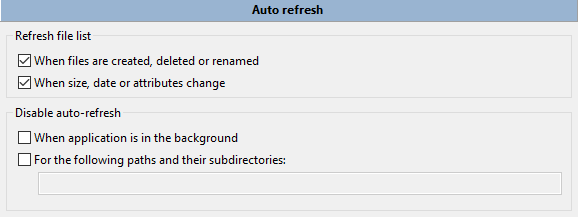
刷新文件列表 – 指定了Double Commander应对哪些事件并更新文件列表和状态栏：
当文件被创建、删除或重命名时。
当大小、日期或属性发生变化时。
如果可能，Double Commander 会对文件列表进行适当的更改，否则它会完全重新读取文件列表。如果更改数量很大（如果受影响的文件超过四分之一或更改总数超过 100），文件列表将被完全重新读取。
注意：此功能可能无法在挂载的网络目录中使用。
如果两个选项都被禁用，Double Commander 将不会监视第三方应用程序所做的更改，并且在程序在文件系统中进行更改后，它将重新读取整个文件列表。
在虚拟文件系统（WFX 插件，GVfs）中，当您创建、删除或重命名文件时，Double Commander会重新读取整个文件列表。
您还可以禁用自动刷新：
当Double Commander窗口在后台或最小化时。
对于指定的路径及其子目录，只需用分号“;”将它们列出，且不留空格（例如 /home;/media/cdrom）。
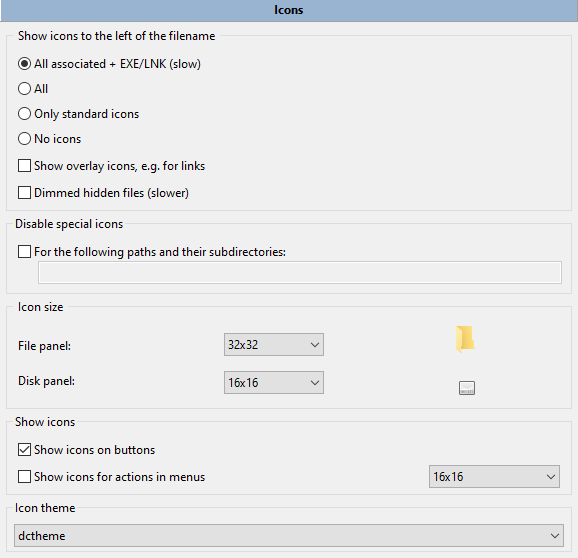
第一个选项允许在名称左侧显示文件类型图标：
所有关联 + EXE/LNK（慢） – 与 所有 相同，但额外提取 .exe 文件和快捷方式中的图标。
所有 – 与任何程序相关的所有文件类型的图标将被显示（来自系统设置和Double Commander 文件关联）。DC 还将显示在 desktop.ini （Windows）和 .directory （Linux）文件中指定的文件夹图标。
仅标准图标 – 仅显示在 pixmaps.txt 文件中列出的图标和文件关联设置中的图标。在这种情况下，您只能使用来自 Double Commander 图标主题的图标（请参见程序文件夹中的目录 pixmaps/dctheme/XxX/mimetypes ）或指定完整的（带路径的）文件名。创建图标主题的说明在 常见问题解答 中。
没有图标。
显示叠加图标，例如链接的图标 – 如果启用，Double Commander将显示叠加图标，例如 .lnk 文件和链接的箭头。
变暗的隐藏文件（较慢） – 如果启用，Double Commander将以 50%的透明度显示隐藏文件的图标。
禁用特殊图标 – 您可以禁用指定目录及其子目录中特殊图标（叠加图标、来自 .exe/.lnk 文件的图标）的加载，只需用分号 ";" 列出它们，且不留空格。
图标大小 – 您可以从以下大小中选择：
文件面板 – 16x16, 24x24, 32x32 或 48x48.
磁盘面板 – 16x16, 24x24 或 32x32.
主菜单 – 16x16、24x24 或 32x32。
在按钮上显示图标 – 如果启用，Double Commander将在对话窗口的按钮上显示图标 (确定, 取消, 开始, 添加到队列 等等)。
在菜单中显示操作图标 – 如果启用，Double Commander将在主菜单中显示图标。
在最后一个参数中，图标主题，您可以从下拉菜单中选择一个图标集。Double Commander 确实附带一个DCTheme图标主题，但您可以创建并添加自己的主题，详细信息请参见常见问题解答 。
注意：在类 Unix 系统中，Double Commander 将主要使用系统图标主题，如果某些图标不存在，它将使用自己的图标。
忽略特定的文件和文件夹（每行一个）：它们将不会在面板中显示。
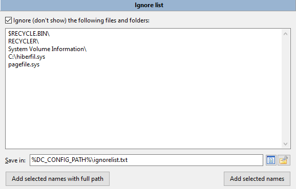
您可以使用文件的完整路径或文件名。
支持通配符 "*" 和 "?"（符号 "*" 表示匹配任意数量的字符，符号 "?" 表示匹配任意一个字符）。
当掩码以目录分隔符结束时，它将仅匹配目录。
保存到： – 忽略列表位置（默认是 ignorelist.txt 在 doublecmd.xml 附近）。
添加选定名称及其完整路径 – 将添加在活动面板中选定的所有文件/文件夹（如果存在）或光标下的文件及其完整路径。
添加选定的名称 – 将添加在活动面板中选定的所有文件/文件夹的名称（如果存在）或光标下的文件。这意味着它们将在所有地方被隐藏。
注意：这两个按钮不会在文件夹名称的末尾添加目录分隔符。
您可以使用内部命令 cm_SwitchIgnoreList 来开启和关闭此选项，添加工具栏按钮或快捷键。
请查看专门的 压缩程序处理 帮助页面，了解如何使用和配置它。
此部分包含当鼠标光标悬停在文件上时的工具提示设置。
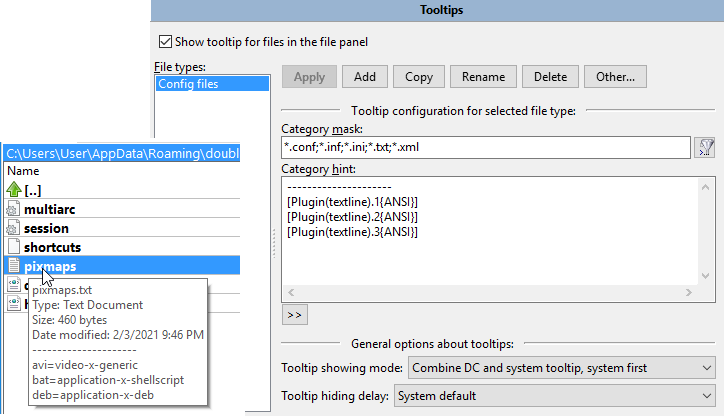
在文件面板中显示文件的工具提示 – 启用使用工具提示的功能。
文件类型 – 包含文件组的列表。Double Commander从上到下检查列表，直到找到第一个匹配项：列表中较高的文件组将覆盖下面的任何文件组。
按钮：
应用 – 将保存所选文件类型的设置。
添加 – 将添加一个新文件类型并询问名称，您可以写下文件的描述、它的功能或它打开的程序。
复制 – 将以新名称复制所选文件类型。
重命名 – 将提示输入所选文件类型的新名称。
删除 – 将删除所选文件类型。
其他...按钮是一个菜单：
放弃修改 – 将重置所选文件类型中的所有未保存更改。
排序工具提示文件类型 – 将按字母顺序对文件类型进行排序（首先是大写字母，然后是小写字母）。
导出... 和 导入... – 允许将工具提示导出到 DC Tooltip 文件，并从这些文件中导入（全部或部分）。
您可以在下面配置所选文件类型的工具提示内容。
在行 类别掩码 中输入一个通配符掩码以匹配文件类型（符号 "*" 表示匹配任意数量的字符，符号 "?" 表示匹配任意一个字符）。您可以在此处使用分号 ";"
输入多个文件类型，且不需要空格。您还可以使用搜索模板 (  )，包括使用内容插件的搜索。
)，包括使用内容插件的搜索。
在类别提示字段中，您可以输入任何文本并使用 WDX 插件字段获取信息（“>>”按钮）。
剩余的参数是一般的工具提示参数。
工具提示显示模式 – 确定Double Commander将显示哪种类型的工具提示以及如何组合它们（如果有两种类型）：
合并DC和系统提示，DC优先（传统）。
合并DC和系统提示，系统优先。
尽可能显示DC提示，不使用系统提示。
仅显示DC工具提示。
仅显示系统提示。
系统工具提示的内容取决于操作系统：
Windows：文件名与 Windows 资源管理器中的相同。如果无法获取信息，则DC将显示与 Linux 和其他类 Unix 系统相同的内容。
Linux 和其他类 Unix 系统：文件名、修改日期和大小。
工具提示的第一行始终包含文件名，如果您在类别提示字段中没有指定任何内容，则 DC 工具提示将仅包含文件名。
工具提示隐藏延迟 – 设置工具提示显示的持续时间：系统默认、1 秒、2 秒、3 秒、5 秒、10 秒、30 秒、1 分钟和从不隐藏（当您将鼠标光标移动到另一个文件或文件面板外时，工具提示将被隐藏）。
在本节描述开头的截图中，您可以看到一个使用 textline.wdx 插件的工具提示示例，它显示了文本文件中选定行的内容（在这种情况下是第一、第二和第三行），已选择 "合并DC和系统提示，系统优先" 模式。
此项打开配置文件关联。所有关联集都包含在文件 extassoc.xml 中。
在这里，您可以自定义文件关联，并为选定的文件类型设置命令或脚本。命令将被添加到文件的 上下文菜单 中。Double Commander还允许简单地为文件类型设置（或替换）图标，而无需添加任何操作。
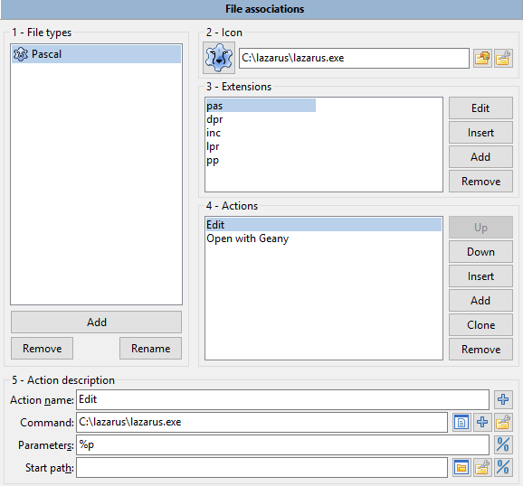
文件类型 – 包含扩展名的列表。每个组可以包含多个文件扩展名，并且这样的组可以与各种程序关联。
添加 – 添加一个新组。您应该输入组名。
删除 – 删除一个组。
重命名 – 允许为该组设置新名称。
图标 – 您可以为此组设置图标的路径。您还可以使用 MIME 类型图标：例如，如果您想使用来自 Double Commander 图标主题的
text-x-pascal.png （或来自 Linux 和其他类 Unix 系统的系统主题），只需插入 text-x-pascal。Double Commander
支持常用的图像格式，此外在 Windows 中，您可以使用来自二进制可执行文件（.exe, .dll）的图标。
扩展名 – 在这里您可以为选定的组设置扩展名（不带点）。您可以使用竖线“|”添加多个扩展名（它们之间不带空格）。特殊值：
file – 任何文件；
folder – 任何目录；
default – 当不存在特定扩展关联时使用。
插入 – 在列表的当前位置添加一个新扩展。
添加 – 将新扩展添加到列表的末尾。
删除 – 从组中删除一个扩展。
操作 – 在这里您可以为该组设置命令。
插入 – 在列表的当前位置添加一个新操作。
添加 – 将一个新操作添加到列表的末尾。
删除 – 从列表中删除一个操作。
上，下 – 移动动作。动作（如果有多个）可以重新排序。
动作名称： – 设置动作类型。变量：
从弹出菜单
打开 - 在按下 Enter 或双击后将运行操作。
查看 - 在按下 F3 后将执行操作。
编辑 - 在按下 F4 后将执行该操作。
文件上下文菜单中显示的其他操作（子菜单“操作”）。
命令 – 来自桌面环境的任何命令。还有几个宏可用（名称区分大小写！）：
{!DC-EDITOR} – 调用内部编辑器；
{!DC-VIEWER} – 调用内部查看器；
{!EDITOR} – 呼叫编辑器（内部或外部，取决于配置）；
{!VIEWER} – 调用查看器（内部或外部，取决于配置）；
{!SHELL} – 在终端中运行并在结束时保持打开。
{!TERMSTAYOPEN} – 在终端中运行并在结束时保持打开状态；
{!TERMANDCLOSE} – 在终端中运行并在结束时请求关闭它。
使用 {!DC-VIEWER} 宏的“查看”操作将被考虑用于 快速查看 ，其他宏和命令将被忽略。
{!TERMSTAYOPEN} 和 {!TERMANDCLOSE} 已被添加以实现统一，并能够使用变量 %t0 和 %t1 ， {!SHELL} 保留以兼容旧版本。
作为一个命令，您可以使用 Double Commander 的内部命令。内部命令的参数每行指定一个，因此您在这里只能指定一个。此外，使用内部命令 cm_ExecuteScript，您可以运行 Lua 脚本 ，在这种情况下，您可以使用 cm_CopyFullNamesToClip 或 cm_SaveSelectionToFile 获取所选文件的名称。
参数 – 命令参数，包括变量：
任何来自"percent"变量 的变量。
<?command?> – 在系统 shell 中运行 "command"，并将输出传递给上面的命令。
至少，您必须指定一个文件名，通常是 %p 或 %p0 ，用于光标下的文件。
开始路径 – 命令启动目录。此目录将成为正在启动的程序的工作目录，如果您不需要明确指定它，则可以将此字段留空：在这种情况下，工作目录将是活动文件面板的当前目录（常规文件）或临时文件的系统目录（来自压缩文件和 WFX 插件的文件）。
所有可用的操作将在上下文菜单的“操作”子菜单中显示：
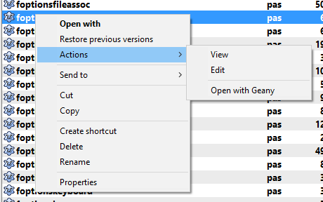
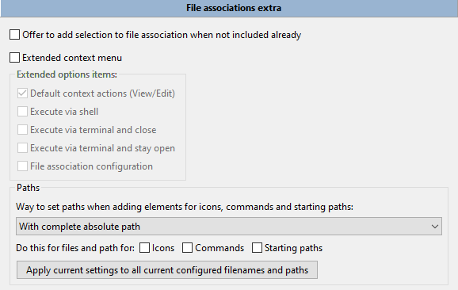
当未包含时，提供将选择添加到文件关联的选项 – 在访问文件关联时，如果当前选定的文件尚未包含在配置的文件类型中，则提供将其添加的选项。这是一种快速添加“打开方式”操作的方法：Double Commander将提示您指定类型名称和可执行文件，其他所有操作将自动完成。
扩展上下文菜单 – 允许向“操作”子菜单添加一些项目：
默认上下文操作（查看/编辑） – 用于在查看器和编辑器中打开文件的命令。将使用内置工具或外部应用程序（取决于设置），内部文件关联将被忽略。
使用宏运行 {!SHELL} 、 {!TERMANDCLOSE} 和 {!TERMSTAYOPEN} （详细信息见 这里 ）：
通过 shell 执行
通过终端执行并关闭
通过终端执行并保持打开状态
文件关联配置 – 打开 文件关联 设置部分。
在下面，您可以选择在添加图标、命令和启动路径时如何设置路径：
带有完整的绝对路径。
相对于%COMMANDER_PATH% 的路径。
相对于指定路径。
您还可以将所选方式应用于已添加的路径。
请查看专门的 常用文件夹列表 帮助页面，了解如何使用和配置它。
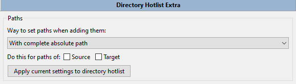
在本节中，您可以选择如何设置路径和目标路径：
带有完整的绝对路径。
相对于%COMMANDER_PATH% 的路径。
相对于指定路径。
您还可以将所选方式应用于已添加的路径。
由 Rustem 创建 (dok_rust@bk.ru)
罗德·J（rodmac_shiels@hotmail.com）英文版